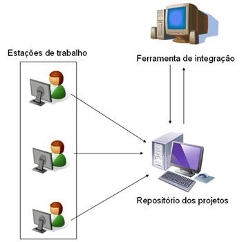

O que é C.I.
Integração diversas vezes ao dia Requisitos Resultado
Integração diversas vezes ao dia:
Funcionalidades pequenas;
Testes passando;
Requisitos:
Build automatizado com testes;
Tempo de build menor do que 10 minutos;
Resultado:
Uma versão funcional a todo o momento;
Resumindo...
Entrega Contínua é uma disciplina de desenvolvimento na qual software é construído de tal maneira que o mesmo pode ser colocado em produção a qualquer momento.
Arquitetura para representar integração Contínua

Na Figura
ilustramos uma arquitetura que representa a idéia de integração contínua. Observe que nesse exemplo temos uma equipe com três desenvolvedores realizando mudanças em um mesmo arquivo ou em um conjunto de arquivos que constituem um projeto, compartilhado por um repositório localizado em outra máquina. No exemplo, consideramos que uma ferramenta própria para integração contínua instalada em outra estação é utilizada. A partir dela, poderíamos definir uma hora do dia para executar o build da última versão do projeto em desenvolvimento. Além disso, dependendo da ferramenta utilizada, podemos definir que uma notificação por e-mail deve ser enviada para toda a equipe de desenvolvimento informando se a execução foi realizada com sucesso ou se falhou.
Porque fazer ?
Feedback instantâneo Segurança em relação a mudanças Build Limpo
Porque então não rodar os testes na sua máquina?
Best Practices
Pequenos Comits
Servidores de Integração (Frameworks)
Cruise Control
Hudson
Continuum
Bamboo
TeamCity
BuildBot
Automated Build Studio
AnthillPro
Ferramentas
CCMenu ou CCtray
Selenium
Xvfb
Curiosidades
Build
Commit
Update
Checkout